קאפיטל 7
אינפאטעינמענט און טאטש-סקרין
זייטן 113–134 אינעם PDF
דער סיסטעם אין איין בליק
דער אודיא סיסטעם אין דעם CR-V EX שפילט AM און FM ראדיא, USB פלעש דרייווס, iPod און iPhone, און Bluetooth (דראטלאזע פארבינדונג) מכשירים. מען קען אים באדינען אויף דריי אופנים: מיט די קנעפלעך און דעם קנאפ אויפן פאנעל לעבן דעם סקרין, מיט די קנעפלעך אויפן סטירינג וויל, און מיט די אייקאנס אויפן טאטש-סקרין אליין. יעדעס האט זיין פלאץ. די קנעפלעך אויפן סטירינג וויל זענען פאר'ן דרייוון, דער טאטש-סקרין איז פאר איינשטעלן ווען מען שטייט פארקט, און די קנעפלעך אויפן פאנעל דעקן די עיקר זאכן וואס איר דארפט אן קוקן.
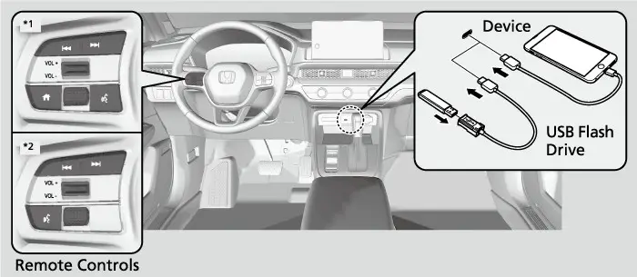
די אפיציעלע Honda ספעציפיקאציעס שרייבן אז דער EX האט א 9-אינטש קאליר טאטש-סקרין און א 240-וואט אודיא סיסטעם מיט 6 ספיקערס. פאר 2026 איז דער 9-אינטש סקרין, וואס איז 2 אינטש גרעסער ווי פריער, געווארן סטאנדארט אויף יעדן CR-V טרים. דאס זעלבע מיט דראטלאזע Apple CarPlay און Android Auto, און מיט דעם דראטלאזן טעלעפאן טשארדזשער. די טאבעלע אונטן ווייזט ווי דער אודיא פונעם EX פארגלייכט זיך מיט די אנדערע טרימס.
CR-V אודיא סיסטעמען לויט טרים (Honda פיטשער גייד)
| טרים | כח | ספיקערס |
|---|---|---|
| LX | 160 W | 4 |
| EX, Sport Hybrid | 240 W | 6 |
| EX-L, TrailSport Hybrid, Sport-L Hybrid | 320 W | 8 |
| Sport Touring Hybrid | Bose | 12, מיט א סאבוופער |
די Honda ספעק בלעטער שרייבן SiriusXM, HD Radio און Google built-in נאר פאר'ן Sport Touring Hybrid. אויפן EX האט איר פשוט'ע AM און FM ראדיא, פלוס אייער טעלעפאן. RDS (סטאנציע נעמען אויפן סקרין(און Speed Volume Compensation)וואליום לויט דער גיכקייט) זענען סטאנדארט אויף אלע טרימס.
אנצינדן און די קנעפלעך אויפן פאנעל
Power מאדָע און דער ערשטער סקרין
דער אודיא סיסטעם ארבעט נאר ווען דער power מאדָע איז אין ACCESSORY אדער ON. די power מאדָעס און דער ENGINE START STOP קנעפל (דער קנעפל צו אנצינדן און אפשטעלן) ווערן ערקלערט אין קאפיטל 6. דער 9-אינטש טאטש-סקרין צינדט זיך אן אליין ווען איר שטעלט איינעם פון די מאדָעס. דאס ערשטע וואס ער ווייזט איז א disclaimer סקרין (א ווארענונג-בלאט). קלייבט OK. אויב איר קלייבט נישט OK אין 5 סעקונדעס, גייט דער סיסטעם אליין צום היים-סקרין. איר דארפט אים קיינמאל נישט אנרירן אויב איר אייַלט זיך. גיט אים נאר די פאר סעקונדעס איידער איר נעמט זיך צו מוזיק אדער טעלעפאן.
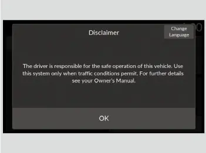
די דריי פיזישע קנעפלעך
דריי פיזישע קנעפלעך זיצן לעבן דעם סקרין, און די וועט איר ניצן מער ווי אלעס אנדערש:
- Home קנעפל (היים): ברענגט אייך צום היים-סקרין פון וואו נאר.
- Connect קנעפל (פארבינדן): לויט דעם Honda פיטשער גייד ליגט ער אויף דער לינקער זייט פונעם סקרין. ער שפרינגט גלייך צו Apple CarPlay אדער Android Auto פון אייער priority טעלעפאן (דער הויפט טעלעפאן).
- VOL/AUDIO קנאפ (וואליום/ אן-אויס): דריקט אים צו אנצינדן און אויסלעשן דעם אודיא סיסטעם; דרייט אים צו מאכן הויכער אדער שטילער.
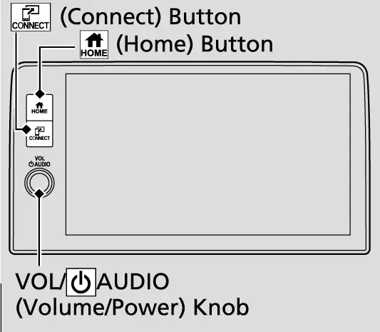
שוץ קעגן גנבה נאכ'ן פארלירן שטראם
דער אודיא סיסטעם האט א שוץ קעגן גנבה. ווען ער פארלירט שטראם, למשל ווען מען נעמט אפ די באטעריע אדער זי ווערט ליידיג, ווערט דער סיסטעם אפגעשטעלט. אין געוויסע פעלער קען ער דערנאך ווייזן א סקרין צו אריינלייגן א קאוד. אויב דאס פאסירט, צינדט אים צוריק אן אזוי.
צוריק אקטיווירן דעם אודיא סיסטעם
- שטעלט דעם power מאדָע אויף ON.
- צינדט אן דעם אודיא סיסטעם.
- דריקט און האלט דעם VOL/AUDIO קנאפ מער ווי צוויי סעקונדעס.
- ווארט בשעת דער אודיא יוניט פארבינדט זיך מיט'ן vehicle control unit (דער קאר'ס קאנטראל-יוניט); דערנאך ווערט דער סיסטעם צוריק אקטיוו.
אויב דער קאנטראל-יוניט דערקענט נישט דעם אודיא יוניט, זאגט דער מאנואל אז איר מוזט ברענגען דעם קאר צום דילער און לאזן טשעקן דעם אודיא יוניט. ארבעט מיט דער באטעריע ווערט ערקלערט אין קאפיטל 20.
דער היים-סקרין
זאנעס און קעסטלעך
דריקט Home צו זען דעם אויסשטעל. דער מאנואל באשרייבט דעם היים-סקרין ווי א צאל זאנעס. טראכט פון אים ווי א לאבי: יעדע פונקציע הייבט זיך אן פון איינע פון די טירן.
זאנעס אויפן היים-סקרין
| זאנע אדער קעסטל | וואס עס טוט |
|---|---|
| Audio זאנע | ווייזט וואס שפילט: ראדיא, USB אדער Bluetooth |
| Phone זאנע | ווייזט Bluetooth HandsFreeLink (HFL) אינפארמאציע |
| Apple CarPlay / Android Auto | עפנט דעם טעלעפאן אויפן סקרין |
| General Settings | עפנט די איינשטעלונג מעניוס |
| Audio Source | וועקסלט צווישן די אודיא מקורות |
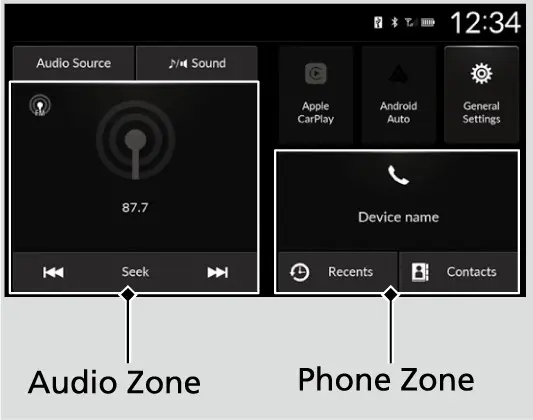
ווי דער טאטש-סקרין ארבעט
מען באדינט דעם סקרין מיט פשוט'ע באוועגונגען: אנרירן, שטרייכן און סקראלן. געוויסע זאכן ווערן גרוי בשעת'ן דרייוון, כדי נישט צו פארשטערן, און מען קען זיי קלייבן נאר ווען דער קאר שטייט. דאס איז נארמאל, נישט קיין פעלער. מיט הענטשקעס קען דער סקרין ענטפערן שוואכער אדער גארנישט. אויב דער סקרין פילט זיך צו שווער אדער צו שפירעוודיג, ניצט די Touch Panel Sensitivity (שפירעוודיגקייט פונעם סקרין) איינשטעלונג אינעם System מעניו. עס זענען דא צוויי ברירות, Low און High, און Low איז די פאבריק איינשטעלונג.
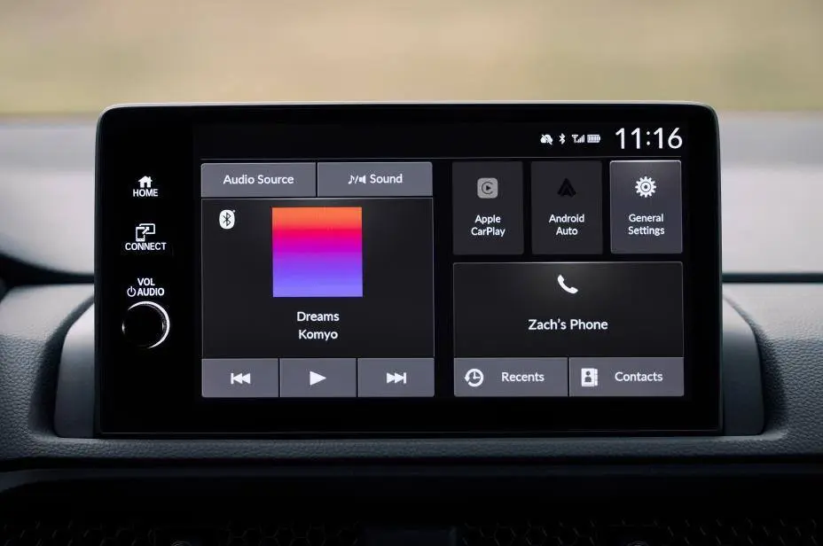
דער סטאטוס באר
דער סטאטוס באר גייט אריבער אויבן פונעם סקרין. קלייבט אים און עס עפנט זיך א סטאטוס געגנט. קלייבט וועלכע זאך עס איז דארט צו זען די פרטים, דערנאך קלייבט Back (צוריק) צו פארמאכן. דאס איז א שנעלער וועג צו טשעקן וואס איז פארבונדן אדער וואס דער סיסטעם זאגט אייך, אן גראבן אין מעניוס. עפענען דעם סטאטוס געגנט טוישט קיינמאל נישט קיין איינשטעלונג פון זיך אליין.
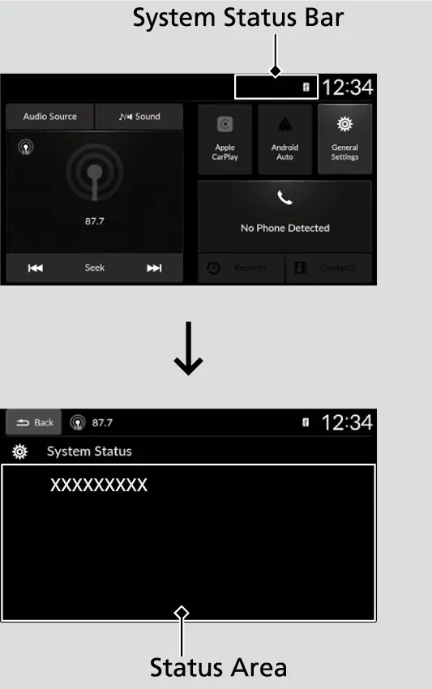
ריבוטן דעם סיסטעם
אמאל פרירט א סקרין, אדער א טעלעפאן וויל זיך נישט פארבינדן. איידער איר פרובירט עפעס שטארקס, ריבוט דעם אודיא סיסטעם.
ריבוטן דעם אודיא סיסטעם
- דריקט און האלט דעם Home קנעפל.
- האלט ווייטער ביז די Reboot (ווידער אנהייבן) ברירה קומט ארויף. דער מאנואל זאגט נאר "א געוויסע צייט" און גיט נישט קיין פונקטליכע צאל סעקונדעס.
- קלייבט Reboot. דער סיסטעם הייבט זיך ווידער אן.
סאונד און סקרין איינשטעלונגען
טאן, באלאנס און פעידער
צו איינשטעלן דעם סאונד, דריקט Home, קלייבט Sound, און דערנאך קלייבט א זאך. די זעלבע סקרינס קען מען אויך דערגרייכן דורך Home, General Settings, Sound.
- Bass / Mid / Treble: פורעמען דעם טאן (באס, מיטל, הויך).
- Balance / Fader: Balance רוקט דעם סאונד לינקס אדער רעכטס; Fader רוקט אים פאראויס אדער אהינטער.
- Speed Volume Compensation: שטעלט איין וויפיל דער וואליום הייבט זיך מיט דער גיכקייט.
צו צוריקמאכן אייערע ענדערונגען ביי Bass, Mid, Treble, Balance אדער Fader, קלייבט Reset to Default (צוריק צו די פאבריק) אויפן סקרין פון יענער איינשטעלונג.
Speed Volume Compensation (SVC)
SVC (וואליום לויט דער גיכקייט) מאכט הויכער ווען איר פארט שנעלער און שטילער ווען איר פארט פאמעלעך. עס האלט דעם ראדיא הערבאר איבער דעם הייוועי ראש, אן קלאפן אין די אויערן ווען איר שטעלט זיך אפ ביי א ליכט. דער Honda פיטשער גייד שרייבט אז מען קען עס אויסלעשן ווען מען וויל, אויב איר ווילט אז דער וואליום זאל בלייבן פונקט ווי איר האט אים געשטעלט. אויב דער ראדיא שיינט צו טוישן דעם וואליום פון זיך אליין, איז SVC כמעט שטענדיג די סיבה.
ליכטיגקייט, קאנטראסט און Display Off
פאר'ן סקרין, גייט צו Home, General Settings, Display. שטרייכט אדער טאפט אויפן ליכטיגקייט באר צו איינשטעלן. Contrast און Black Level (שווארץ-שטאפל) ארבעטן די זעלבע וועג, און Reset to Default ברענגט צוריק די פאבריק ווערטן. Day Mode און Night Mode וועקסלען צווישן דעם טאג- און נאכט-אויסזען. די טאבעלע אינעם מאנואל שרייבט אז די צוויי מאדָעס גילטן ווען דער AID סענסאר איז אויסגעלאשן.
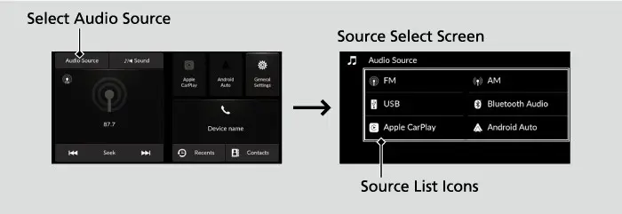
Display Off (סקרין אויס) מאכט דעם סקרין טונקל כדי ער זאל נישט בלענדן אין די אויגן אויף א פינצטערן וועג. די מוזיק שפילט ווייטער ווען דער סקרין איז אויס. צו צוריק אנצינדן דעם סקרין, דריקט איינעם פון די קנעפלעך לעבן אים, למשל Home.
סטירינג קנעפלעך און קלייבן א מקור
וואליום און seek/skip
דער סטירינג וויל האט אודיא קנעפלעך כדי די הענט זאלן בלייבן אויפן ראד. די אינפארמאציע ווערט געוויזן אויפן driver information interface (דער אינפארמאציע-סקרין פארן דרייווער) אינעם מיטער. דריקט דעם וואליום שאלטער ארויף צו מאכן הויכער און אראפ צו מאכן שטילער. די seek/skip קנעפלעך (זוכן/ איבערשפרינגען) ארבעטן אנדערש לויט דעם מקור.
seek/skip קנעפלעך לויט מקור
| מקור | דריקן | דריקן און האלטן |
|---|---|---|
| ראדיא | נעקסטע אדער פריערדיגע געשפייכלטע סטאנציע | נעקסטע אדער פריערדיגע שטארקע סטאנציע |
| מיט קאבל, USB, Bluetooth, טעלעפאן | נעקסטע ליד, אדער צוריק צום אנהייב פון דעם אדער פון דעם פריערדיגן ליד | לויט דעם מכשיר |
| USB פלעש דרייוו | נעקסטע ליד, אדער צוריק צום אנהייב פון דעם אדער פון דעם פריערדיגן ליד | נעקסטע אדער פריערדיגע פאלדער |
דער מאנואל שרייבט אז די פונקטליכע ארבעט קען זיך טוישן לויט דעם פארבונדענעם מכשיר.
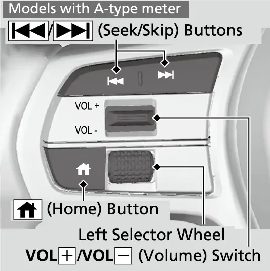
קלייבן א מקור מיט'ן לינקן ראדל (A-type meter)
דער EX האט דעם 7-אינטש מיטער, וואס דער מאנואל רופט A-type meter. אזוי קלייבט מען דארט א מקור.
קלייבן דעם אודיא מאדָע פונעם סטירינג וויל
- דריקט דעם Home קנעפל אויפן סטירינג וויל.
- דרייט דעם לינקן ראדל ארויף אדער אראפ צו קלייבן Audio אויפן driver information interface, דערנאך דריקט דאס ראדל.
- דרייט ארויף אדער אראפ דורך די מאדָעס: FM, AM, iPod, USB, Bluetooth, Apple CarPlay, Android Auto.
- דריקט דאס לינקע ראדל צו קלייבן א מאדָע.
עס ווייזן זיך נאר מאדָעס מיט א פארבונדענעם מכשיר אדער מעדיום. דער מאנואל שרייבט אויך אז געוויסע פונקציעס קענען נישט זיין צו באקומען, לויט דעם Bluetooth מכשיר. דריקן דעם Home קנעפל אויפן סטירינג וויל ברענגט אייך צוריק צום היים-סקרין פונעם driver information interface. די פולע מיטער מעניוס ווערן ערקלערט אין קאפיטל 6.
דער אנדערער וועג צו קלייבן א מקור איז אויפן טאטש-סקרין: קלייבט Audio Source אויפן היים-סקרין, דערנאך קלייבט אן אייקאן אויף דער ליסטע. מאכט אייך א געוואוינהייט צו ניצן דעם סטירינג וויל בשעת'ן דרייוון און דעם טאטש-סקרין ווען איר שטייט. די געוואוינהייט אליין האלט די אויגן אויפן וועג.
AM/FM ראדיא
Favorites
קלייבט FM אדער AM מיט'ן לינקן ראדל אדער דורך Audio Source. מען קען אפהיטן 12 AM/FM סטאנציעס אלס Favorites (באליבטע).
אפהיטן און ענדערן א באליבטע סטאנציע
- שטעלט אריין די סטאנציע וואס איר ווילט.
- קלייבט און האלט א preset אייקאן צו אפהיטן די סטאנציע דארט, אדער קלייבט Press & Hold to Add צו מאכן א נייעם preset.
- צו ענדערן, קלייבט און האלט דעם אייקאן פון דער באליבטער סטאנציע.
- קלייבט Remove Favorite צו אויסמעקן, אדער Replace with (נומער) צו פארביטן א געשפייכלטע.
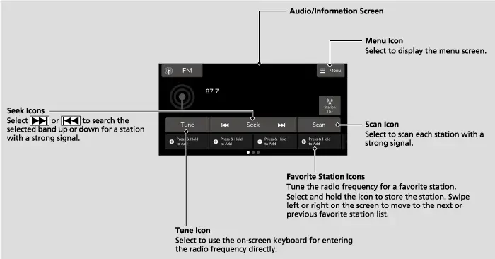
Scan, RDS און Station List
ווען איר זענט אין אן אומבאקאנטן געגנט, ניצט Scan (דורכזוכן). עס שפילט יעדע פון די שטארקסטע סטאנציעס אויף דער באנד 10 סעקונדעס. קלייבט Stop צו אפשטעלן ביי דער סטאנציע וואס איר האט ליב.
אויף FM האט איר אויך RDS, דער Radio Data System, וואס גיט טעקסט אינפארמאציע פון סטאנציעס וואס שטיצן RDS. ווען איר שטעלט אריין אזא סטאנציע, צינדט זיך RDS אן אליין און דער סקרין טוישט זיך פון דער פרעקווענץ צום נאמען פון דער סטאנציע. אויב דער סיגנאל ווערט שוואכער, ווייזט דער סקרין ווייטער דעם לעצטן סטאנציע נאמען. ווינדערט אייך נישט ווען דער נאמען בלייבט אבער דער קול ווערט שוואך.
בשעת איר הערט FM, קלייבט Station List (ליסטע פון סטאנציעס) צו זען די סטאנציעס וואס מען כאפט, און קלייבט איינע צו אריינשטעלן. אויב די ליסטע זעט אויס אלט, קלייבט Station List און דערנאך Refresh צו דערהיינטיגן. אונטער Menu געפינט איר FM Settings. Sound Settings עפנט די סאונד איינשטעלונגען וואס זענען ערקלערט אויבן, און Program Service Name שטעלט איין צי מען ווייזט דעם סטאנציע נאמען.
USB פארטס און מוזיק מיט קאבל
וועלכער פארט טוט וואס
די Honda 2026 ספעציפיקאציע טאבעלע שרייבט די פארטס פאר'ן EX: איין USB-C 3.0-אמפער סמארטפאון/ אודיא פארט פארנט, איין USB-C 3.0-אמפער טשארדזש פארט פארנט, און צוויי USB-C 3.0-אמפער טשארדזש פארטס פאר די הינטערשטע זיצן. דער Honda אודיא פיטשער בלאט דערמאנט נאך א USB-A פארט, מיט 2.5 אמפער אויף זיין ספעק בלאט. וויבאלד די 2026 ספעציפיקאציע טאבעלע זאגט USB-C, טשעקט די פארעם פונעם פארט אין אייער קאר איידער איר קויפט קאבלען.
EX USB פארטס
| פארט | טשארדזשט | מוזיק / CarPlay / Android Auto |
|---|---|---|
| פארנט דאטא פארט | יא | יא |
| פארנט טשארדזש פארט | יא | ניין |
| הינטערשטע טשארדזש פארטס (2) | יא , ביז 3.0 A | ניין |
די פארטס וואס זענען נאר פאר טשארדזשן קענען נישט שפילן מוזיק, אפילו אויב איר שטעקט אריין א מוזיק שפילער. די הינטערשטע פארטס קענען געבן ביז 3.0 A, אבער נאר ווען דער מכשיר בעט עס.
פרטים וועגן טשארדזשן
די פארנט פארטס שטיצן USB Power Delivery און PPS (Programmable Power Supply).
פארנט USB טשארדזש כח (אונער'ס מאנואל)
| פארטס אין באנוץ | סטאנדארט כח |
|---|---|
| איין פארט | 5V/3A (15W), 9V/3A (27W), 15V/3A (45W), 20V/3A (60W) |
| ביידע פארטס | 5V/3A (15W), 9V/3A (27W), 20V/2.25A (45W); מאקסימום 60W צוזאמען |
| PPS | 5.0V-21V, מאקסימום 60W |
מיט געוויסע מכשירים און קאבלען קען דאס טשארדזשן זיך נישט אנהייבן, אדער גיין פאמעלעך. די עצה פונעם מאנואל איז צו ניצן נאר איין פארט און ארויסנעמען אלעס פונעם אנדערן פארט, אפילו א ליידיגן קאבל. פאר פרטים וועגן אמפער, קוקט אין דעם מאנואל פון אייער מכשיר. דער דראטלאזער טשארדזשער ווערט ערקלערט אין קאפיטל 5.
שפילן מוזיק מיט א קאבל
פארבינדט אייער מכשיר צום דאטא פארט מיט א USB קאבל, דערנאך קלייבט Audio Source און דעם USB אייקאן. צו געפינען א ליד, קלייבט Music Library (מוזיק ביבליאטעק), קלייבט א קאטעגאריע ווי Artists אדער Albums, און קלייבט ווייטער ביז איר קומט צום ליד. די פונקציעס זענען אנדערש לויט דעם מכשיר און די ווערסיע פון דער סאפטוועיר.
בשעת אן iPhone איז פארבונדן דורך Apple CarPlay, שפילט זיין מוזיק נאר דורך CarPlay, נישט דורך דעם USB מקור.
שפיל מאדָעס
צו טוישן דעם שפיל מאדָע, קלייבט דעם shuffle (געמישט) אדער repeat (איבערחזרן) אייקאן עטליכע מאל ביז איר קומט צום מאדָע וואס איר ווילט. דער אייקאן טוישט זיך ביי יעדן דריק, קוקט דערויף צו וויסן וואו איר האלט.
שפיל מאדָעס (מיט קאבל און Bluetooth)
| אייקאן | איינשטעלונגען |
|---|---|
| Shuffle | Shuffle off; Shuffle All Songs (שפילט די אויסגעקליבענע ליסטע געמישט) |
| Repeat | Repeat off; Repeat all; Repeat Song (דאס יעצטיגע ליד) |
USB פלעש דרייווס
א USB פלעש דרייוו איז א גוטער וועג צו טראגן אייערע אייגענע רעקארדינגס. דער סיסטעם שפילט MP3, WMA, AAC, FLAC און WAV פיילס. ניצט א דרייוו פון 256 MB אדער מער, פארמאטירט FAT16 אדער FAT32. דער מאנואל רעקאמענדירט צו פארבינדן דעם דרייוו מיט א USB קאבל. צו שפילן, שטעקט אים אריין, קלייבט Audio Source און דעם USB אייקאן, דערנאך Music Library. אויף א פלעש דרייוו זענען די שפיל מאדָעס Random All Tracks און Repeat track.
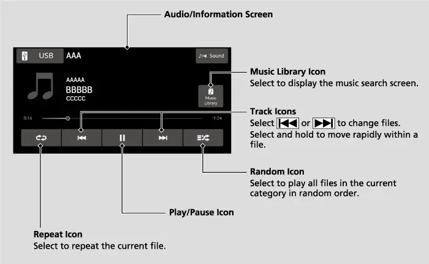
די פיילס שפילן לויט דעם סדר ווי זיי זענען געשפייכלט, וואס קען זיין אנדערש ווי דער סדר וואס אייער קאמפיוטער ווייזט. WMA פיילס וואס זענען געשיצט מיט DRM קען מען נישט שפילן. געוויסע ווערסיעס פון די פארמאטן, געוויסע דרייווס (למשל מיט א זיכערהייט-שלאס) און געוויסע דיגיטאלע מוזיק שפילערס קענען נישט ארבעטן. לאזט נישט קיין דרייוו אדער iPod אינעם קאר, ווייל די זון און די היץ קענען זיי שעדיגן. מאכט א קאפי פון אייערע פיילס איידער איר ניצט א דרייוו אינעם קאר.
USB פעלער מעלדונגען
אויב עפעס גייט נישט גוט, ווייזט דער סקרין א מעלדונג. דער מאנואל ברענגט די דא אלס ביישפילן. ביי יעדע אנדערע מעלדונג, פאלגט די אנווייזונגען אויפן סקרין. אויב איר קענט נישט אוועקמאכן א מעלדונג, ווענדט אייך צום דילער.
USB און iPod פעלער מעלדונגען
| מעלדונג | באדייט און לייזונג |
|---|---|
| File Error | פייל איז געשיצט אדער ווערט נישט געשטיצט; ווייזט זיך עטליכע סעקונדעס, דערנאך שפילט דער נעקסטער פייל |
| No Data | מכשיר ליידיג אדער קיין פיילס צו שפילן; טשעקט די געשפייכלטע פיילס |
| Unsupported Device | מכשיר ווערט נישט געשטיצט; אויב ער דארף ארבעטן, פארבינדט אים נאכאמאל |
| USB not responding | קיין פארבינדונג; ווענדט אייך צו וואו איר האט געקויפט דעם מכשיר |
| USB Hub Unsupported | נאר א hub איז פארבונדן; פארבינדט א פלעש דרייוו צו אים |
| Error found in USB port | נעמט ארויס, לעשט אויס און צינדט אן דעם אודיא; פארבינדט נישט נאכאמאל יענעם מכשיר |
Bluetooth אודיא
Bluetooth אודיא שפילט מוזיק פון אייער טעלעפאן אן א קאבל. עס ארבעט נאר נאכדעם וואס דער טעלעפאן איז פערד און פארבונדן צו HFL (זעט "HandsFreeLink" אונטן). דערנאך קלייבט Audio Source און Bluetooth Audio. אויב א מכשיר איז אריינגעשטעקט אינעם USB פארט, קען זיין אז איר דארפט ערשט קלייבן Audio Source צו דערגרייכן Bluetooth Audio. ניצט דעם play/pause אייקאן, Music Library, און די זעלבע shuffle און repeat מאדָעס ווי ביים שפילן מיט קאבל. געוויסע טעלעפאנען ווייזן ווייניגער קאטעגאריעס אדער פונקציעס, און ביי געוויסע טעלעפאנען דארפט איר אפשר באדינען דעם טעלעפאן אליין.
ווען איר וועקסלט צו אן אנדערן מקור, שטעלט זיך דער טעלעפאן אפ. אויב דער טעלעפאן איז פארבונדן צו CarPlay אדער Android Auto, איז זיין Bluetooth אודיא נישט צו באקומען. אויב דער טעלעפאן ווערט נישט דערקענט, קען זיין אז אן אנדער HFL טעלעפאן וואס שטיצט נישט Bluetooth אודיא איז שוין פארבונדן; קלייבט Change Devices (טוישן מכשירים) צו פאררעכטן. נישט יעדער Bluetooth טעלעפאן פאסט. פאר א ליסטע פון פאסיגע טעלעפאנען אין די פאראייניגטע שטאטן, גייט צו https://mygarage.honda.com/s/honda-handsfreelink-compatibility-check אדער רופט 1 -888 -528 -7876. אין קאנאדע, רופט 1 -855 -490 -7351.
Apple CarPlay
וואס מען דארף
Apple CarPlay ברענגט די עפּס פון אייער iPhone אויפן סקרין. דער מאנואל פארלאנגט אן iPhone 6S אדער נייער מיט iOS 10.0.2 אדער שפעטער, און רעקאמענדירט דעם לעצטן OS. איר דארפט אויך א פועל'דיגע סעלולאר פארבינדונג און דאטא פלאן, און די פרייזן פון אייער קעריער גילטן. דער Honda פיטשער גייד זאגט " iPhone 5 און נייער", אבער מען דארף פאלגן דעם שטרענגערן פארלאנג פונעם מאנואל. פארקט אויף א זיכערן פלאץ איידער איר פארבינדט דעם טעלעפאן אדער עפנט עפּס.
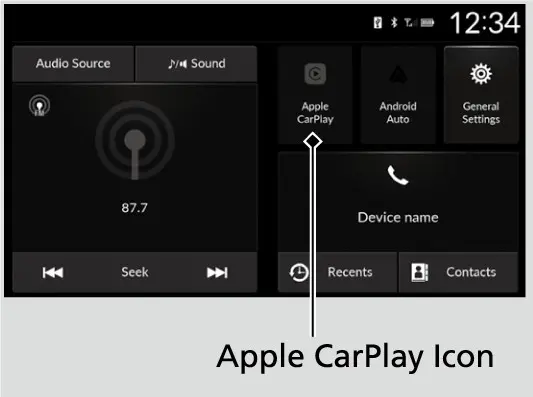
פארבינדן
פארבינדן Apple CarPlay מיט א קאבל
- פארבינדט דעם iPhone צום פארנט USB דאטא פארט מיט'ן קאבל.
- ווען דער באשטעטיגונג סקרין קומט ארויף, קלייבט Yes, אדער No אויב איר ווילט נישט CarPlay.
- דאס ערשטע מאל, גיט רשות צו טיילן קאר אינפארמאציע ווי לאקאציע, גיכקייט און מצב מיט'ן טעלעפאן. דאס קען מען שפעטער טוישן אינעם Connections מעניו.
- שטעלט איין דעם iPhone ווי זיינע אייגענע אנווייזונגען זאגן.
א דראטלאזע פארבינדונג איז ניי פאר 2026 אויף יעדן טרים.
פארבינדן Apple CarPlay אן קאבל
- דריקט Home און קלייבט Apple CarPlay.
- קלייבט Connect New Device (פארבינדן א נייעם מכשיר).
- פערט דעם iPhone צו HFL ווי ערקלערט אונטער "HandsFreeLink" אונטן.
- קלייבט Yes.
- אויב דער iPhone בעט רשות צו נעמען א CarPlay פארבינדונג, גיט רשות.
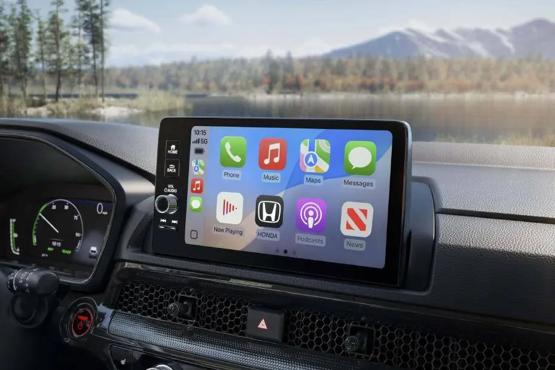
נאכ'ן איינשטעלן, עפנט דער Connect קנעפל אדער דער CarPlay אייקאן דעם CarPlay. צו גיין צוריק צו די Honda סקרינס, קלייבט דעם Honda אייקאן אין CarPlay. די עפּס וואס ווערן געוויזן קען מען טוישן פונעם iPhone, און פאסיגע עפּס פון אנדערע פירמעס, ווי iHeartRadio, ארבעטן אויך.
בשעת CarPlay איז פארבונדן, קען יענער iPhone נישט ניצן Bluetooth אודיא אדער HFL; רופן און מוזיק גייען דורך CarPlay. צו רופן דורך HFL אנשטאט, לעשט אויס CarPlay. אנדערע פערד טעלעפאנען קענען נאך אלץ ניצן Bluetooth אודיא. CarPlay און Android Auto קענען נישט ארבעטן אויף איינמאל.
Siri און אוועקנעמען א טעלעפאן
דריקט דעם talk קנעפל (רעדן) אויפן סטירינג וויל צו אקטיווירן Siri, און דריקט נאכאמאל צו אויסלעשן. די ביישפילן אינעם מאנואל זענען: רופן איינעם, פרעגן וועלכע ליד שפילט, טשעקן דאס וועטער, און לייענען אייער לעצטן אימעיל. צו אפטיילן אדער אויסמעקן א CarPlay טעלעפאן, גייט צו Home, General Settings, Connections, און קלייבט דעם מכשיר.
Android Auto
Android Auto ארבעט די זעלבע וועג פאר Android טעלעפאנען. דער Pixel 9a באקומט א פולע ערקלערונג אין קאפיטל 8, דערפאר דעקט דער אפטייל דא נאר דעם אלגעמיינעם סדר פונעם מאנואל. איר דארפט א פועל'דיגן דאטא פלאן, און דער מאנואל רעקאמענדירט די לעצטע Android ווערסיע. טעלעפאנען מיט Android 9.0 (Pie) אדער עלטער דארפן דעם Android Auto עפ ּפון Google Play. פארקט זיכער איידער איר פארבינדט.
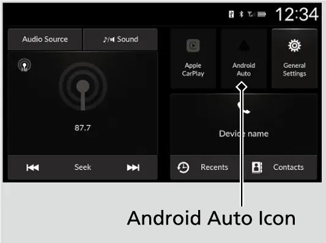
פאר א פארבינדונג מיט קאבל, פארבינדט דעם טעלעפאן צום USB דאטא פארט. ווען דער באשטעטיגונג סקרין קומט ארויף, קלייבט Yes, אדער No צו אפזאגן. דאס ערשטע מאל, שטעלט איין דעם טעלעפאן אז אויטאמאטישע פערינג זאל זיין מעגליך, לויט די אנווייזונגען פונעם טעלעפאן.
פארבינדן Android Auto אן קאבל
- דריקט Home און קלייבט Android Auto.
- קלייבט Connect New Device.
- פערט דעם טעלעפאן צו HFL.
- קלייבט Yes.
- גיט רשות פאר Android Auto אויפן טעלעפאן.
דער Honda אייקאן אין Android Auto ברענגט אייך צוריק צו די Honda סקרינס. בשעת ער איז פארבונדן, קען יענער טעלעפאן נישט ניצן Bluetooth אודיא (A2DP) אדער HFL, כאטש אנדערע פערד טעלעפאנען קענען נאך אלץ שפילן Bluetooth אודיא. די סקרינס קענען זיין אנדערש לויט דער ווערסיע פונעם ּAndroid Auto עפ. דריקט דעם talk קנעפל צו רעדן צו Google Assistant, און דריקט נאכאמאל צו אפשטעלן. דער Honda פיטשער גייד דערמאנט אויך Google Gemini. די ביישפילן פון באפעלן אינעם מאנואל זענען ","Reply to text Play my music"" און "Navigate to Honda". צו אפטיילן אדער אויסמעקן דעם טעלעפאן, גייט צו Home, General Settings, Connections, און קלייבט דעם מכשיר.
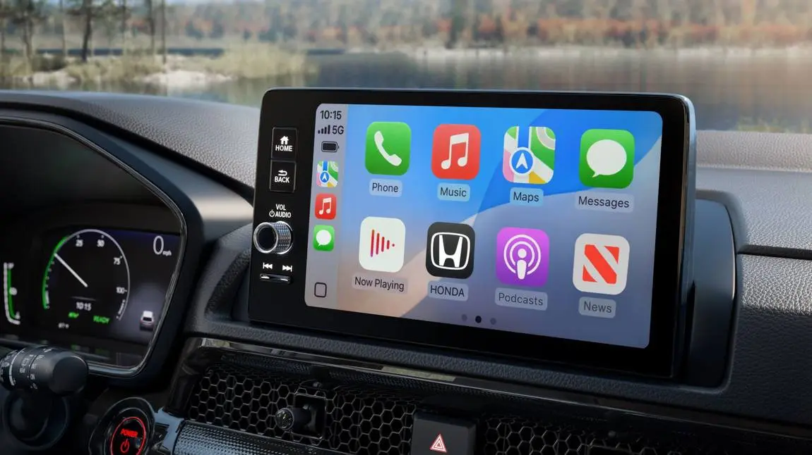
HondaLink
דער EX האט אויך HondaLink. דער Honda פיטשער גייד באשרייבט עס ווי א סעט סמארטפאון עפּס מיט דילער סערוויס אפוינטמענטס, זוכן ערטער, וועטער אינפארמאציע, סערוויס מעלדונגען פון Honda און נאך. לאדנט אראפ דעם HondaLink עפ ּפון App Store אדער Google Play און פערט אייער טעלעפאן צום קאר. דערנאך קענט איר עס ניצן דורך דעם טאטש-סקרין, אדער אומעטום מיט'ן עפ ּאון א סעל סיגנאל. איינשטעלן דעם אקאונט און די פארבונדענע סערוויסעס ווערן ערקלערט אין קאפיטל 23.
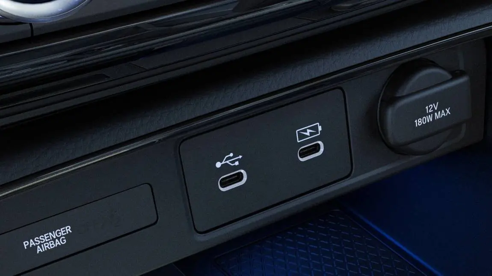
HandsFreeLink: פערן און פארוואלטן טעלעפאנען
פערן א טעלעפאן
HandsFreeLink (HFL) לאזט אייך רופן און ענטפערן דורך די ספיקערס פונעם קאר אן האלטן דעם טעלעפאן. איר מוזט פערן ווען איר שטייט פארקט, ווייל בשעת'ן פארן קען מען נישט פערן. ביז זעקס טעלעפאנען קען מען פערן. לייגט דעם טעלעפאן אויף א פלאץ וואו ער כאפט גוט סיגנאל. פערינג קען ליידיגן די באטעריע פונעם טעלעפאן שנעלער.
פערן א טעלעפאן צו HFL
- מיט'ן power מאדָע אין ACCESSORY אדער ON, דריקט Home און קלייבט די phone זאנע.
- קלייבט Connect New Device.
- שטעלט דעם טעלעפאן אין זוך אדער discoverable מאדָע (אז ער זאל געזען ווערן), דערנאך קלייבט Search for Devices.
- קלייבט אייער טעלעפאן ווען ער קומט ארויף אויף דער ליסטע. אויב ער קומט נישט ארויף, זוכט דעם קאר'ס נאמען פונעם טעלעפאן אנשטאט.
- באשטעטיגט אז דער פערינג קאוד איז דער זעלבער אויף ביידע סקרינס (דאס קען זיין אנדערש לויט דעם טעלעפאן).
- קלייבט Yes.
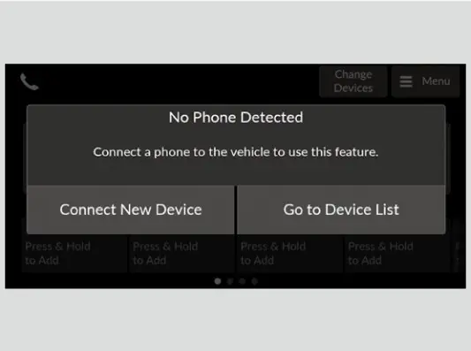
נאכ'ן פערן, ווייזט יעדער טעלעפאן אויף דער ליסטע אייקאנס אויף רעכטס. די אייקאנס ווייזן אז דער טעלעפאן ארבעט מיט Bluetooth אודיא, HFL, Apple CarPlay אדער Android Auto. די אייקאנס זענען אויך שאלטערס: קלייבט איינעם צו טוישן יענע פארבינדונג. ווען CarPlay אדער Android Auto איז אויסגעקליבן פאר א טעלעפאן, קען מען נישט קלייבן זיינע Bluetooth אודיא און HFL אייקאנס. Bluetooth אליין איז שטענדיג אן. צו פערן נאך טעלעפאנען, קענט איר אויך ניצן + Connect New Device אויפן Connections סקרין.
וועקסלען און אויסמעקן טעלעפאנען
נאר איין טעלעפאן ניצט HFL אויף איינמאל. ווען עס זענען דא עטליכע פערד טעלעפאנען אינעם קאר, פארבינדט דער סיסטעם דעם priority טעלעפאן, וואס איר שטעלט איין אונטער Priority Device (הויפט מכשיר). צו וועקסלען, גייט צום טעלעפאן סקרין, קלייבט Change Devices, דערנאך קלייבט דעם פונקציע אייקאן פונעם טעלעפאן וואס איר ווילט. אויב מען געפינט נישט קיין אנדערן טעלעפאן, פארבינדט זיך צוריק דער ערשטער טעלעפאן.
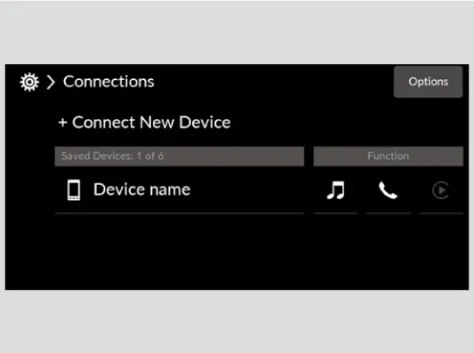
צו אויסמעקן א טעלעפאן, גייט צו Change Devices, קלייבט דעם טעלעפאן, קלייבט Delete, און דערנאך נאכאמאל Delete צו באשטעטיגן. אויב איר פארקויפט דעם קאר, ניצט דעם factory reset וואס ווערט ערקלערט אינעם סוף פון דעם קאפיטל.
קאנטאקטן, היסטאריע און באליבטע
ווען Auto Sync Phone (אויטאמאטיש סינקן) איז אויף On, ווערן די קאנטאקטן און רוף-היסטאריע פונעם טעלעפאן אריינגעברענגט אויטאמאטיש ביים פערן. צו טוישן דאס, גייט צו Home, phone זאנע, Menu, Auto Sync Phone, און קלייבט On אדער Off. ווען איר קלייבט א קאנטאקט, ווייזן ביז פינף קאטעגאריע אייקאנס וועלכע סארט נומערן זענען געשפייכלט, כאטש געוויסע טעלעפאנען קענען נישט אריינברענגען די אייקאנס. דער טעלעפאן-בוך דערהיינטיגט זיך נאך יעדע פארבינדונג; די רוף-היסטאריע דערהיינטיגט זיך נאך יעדע פארבינדונג אדער רוף.
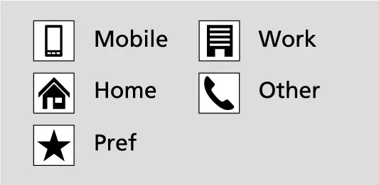
מען קען אפהיטן ביז 16 באליבטע קאנטאקטן. אין דער phone זאנע, קלייבט און האלט Press & Hold to Add, דערנאך קלייבט From Recents, From Contacts, אדער Using Enter Number (לייגט אריין דעם נומער און קלייבט OK). צו טוישן א באליבטן, קלייבט און האלט אים, דערנאך קלייבט Edit Favorites אדער Remove Favorite.
רופן און ענטפערן
מאכן א רוף
וועגן צו מאכן א רוף
| אופן | ווי אזוי |
|---|---|
| Contacts | Home, Contacts, קלייבט א נאמען (און א נומער אויב עס זענען דא מער ווי איינס) |
| Recents | Home, Recents, סארטירט לויט All, Dialed, Missed אדער Received, קלייבט א נומער |
| Favorite | Home, phone זאנע, קלייבט דעם באליבטן |
| Enter number | Home, phone זאנע, Menu, Using Enter Number, לייגט אריין די ציפערן, Call |
דאס רופן הייבט זיך אן אויטאמאטיש. דער טעלעפאן-בוך איז געשפייכלט לויט'ן א-ב; צו סארטירן לויט First Name אדער Last Name, ניצט דעם אייקאן אויבן רעכטס. Recents (לעצטע רופן) האלט ביז 100 רופן און ווייזט זיך נאר ווען א טעלעפאן איז פארבונדן צו HFL.
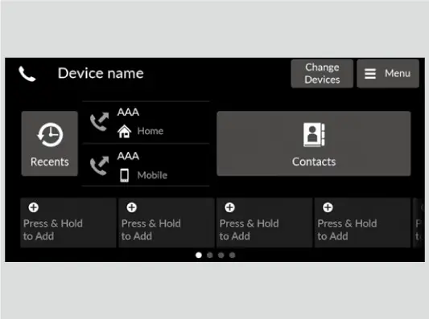
די Honda ספעקס דערמאנען אן SMS טעקסט מעסעדזש פונקציע, אבער די מאנואל בלעטער פאר דעם סיסטעם געבן נישט קיין סטעפס דערפאר, דערפאר ווערן דא נישט קיין געגעבן. מיט CarPlay אדער Android Auto, ניצט קול-באפעלן פאר מעסעדזשעס.
ענטפערן א רוף
ווען א רוף קומט אריין, הערט מען א טאן און דער Incoming Call סקרין (אריינקומענדיגער רוף) קומט ארויף. די מוזיק שטעלט זיך אפ און גייט ווייטער נאכ'ן רוף. דרייט דאס לינקע ראדל צו Answer און דריקט עס, אדער קלייבט Ignore צו אפזאגן אדער ענדיגן דעם רוף. ווען א צווייטער רופט, לייגט Answer דעם ערשטן רוף אויף hold (ווארטן), Swap calls קערט צוריק צו אים, און Hang up ענדיגט דעם יעצטיגן רוף. איר קענט אויך טאפן די אייקאנס אויפן טאטש-סקרין. אויפן 7-אינטש מיטער קענט איר אויך עפענען דעם Phone מעניו מיט'ן Home קנעפל אויפן סטירינג וויל און דאס לינקע ראדל צו דערגרייכן Favorite Contacts אדער Recent Calls.
בשעת'ן רוף
בשעת'ן רוף ווייזן זיך ברירות אויף דער אונטערשטער העלפט פונעם סקרין:
- Swap Calls: לייגט דעם יעצטיגן רוף אויף hold צו ענטפערן א נייעם.
- Mute: מאכט שטיל אייער מייקראפאן; קלייבט נאכאמאל צו צוריק אנצינדן.
- Use Handheld: נעמט איבער דעם רוף פונעם קאר צו אייער טעלעפאן, גוט ווען איר קומט אן.
- Keypad: שיקט ציפערן צו טעלעפאן סיסטעמען מיט מעניוס (נאר ביי געוויסע טעלעפאנען).
General Settings
פאר איר הייבט אן
צו איינשטעלן סעטינגס, זאגט דער מאנואל אז מען דארף זיך אינגאנצן אפשטעלן און שיפטן אין P, מיט'ן power מאדָע אין ON. דערנאך דריקט Home, קלייבט General Settings (אלגעמיינע איינשטעלונגען), און קלייבט א זאך.
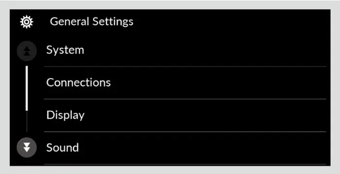
General Settings מעניוס (פאבריק איינשטעלונג אין קלאמערן)
| מעניו | זאכן |
|---|---|
| Date & Time | Time Format 12H/24H (12H); Automatic Date & Time via GPS (On); Auto Daylight Saving Time (On); Set Date; Set Time; Time Zone; Date Format (MM/DD/YYYY) |
| System | ais (English); Touch Panel Sensitivity (Low); Legalçol/FranñLanguage English/Espa Information; Factory Data Reset |
| Connections | Priority Device; Bluetooth Name; MAC Address; Wi-Fi Settings; + Connect New Device; געשפייכלטע מכשירים |
| מעניו | זאכן |
|---|---|
| Display | Brightness, Contrast, Black Level, Day/Night Mode, Display Off |
| Sound | Bass/Mid/Treble, Balance/Fader, Speed Volume Compensation, Sound Volume |
Wi-Fi Settings ווייזט דעם פאסווארט פון דער Wi-Fi פארבינדונג, און מען קען אים אויך טוישן צו א צופעליגן.
Sound Volume און Rear Camera
Sound Volume (וואליום פאר יעדן סארט קול) שטעלט באזונדערע שטאפלען פאר יעדן סארט קול.
Sound Volume שטאפלען
| זאך | ברייט | פאבריק |
|---|---|---|
| System Sounds | 0 ביז 3 | 2 |
| Voice Recognition | 0 ביז 11 | 6 |
| Ringtone | 0 ביז 40 | 20 |
| Phone Calls | 0 ביז 40 | 20 |
די טאבעלע אינעם מאנואל ברענגט אויך Navigation Guidance (0 ביז 11, פאבריק 6). אויב רופן הערן זיך שוואך כאטש די מוזיק איז גוט, הייבט Phone Calls דא.
דער Rear Camera מעניו (הינטערשטע קאמערע) צינדט אן אדער לעשט אויס די fxi ed guideline (פעסטע ליניע(, די dynamic guideline)ליניע וואס בייגט זיך) און די Cross Traffci Monitor פיילן. אלע דריי זענען אן פון דער פאבריק, און דער EX האט Cross Traffic Monitor. די קאמערע אליין ווערט ערקלערט אין קאפיטל 15.
Factory Data Reset
צוריקשטעלן אלע איינשטעלונגען צו די פאבריק
- דריקט Home און קלייבט General Settings.
- קלייבט System, דערנאך Factory Data Reset.
- ווען די באשטעטיגונג קומט ארויף, קלייבט Continue.
- קלייבט נאכאמאל Continue. דער סיסטעם ריבוט זיך.
דאס מעקט אויס אלע מעניו און פערזענליכע איינשטעלונגען און שטעלט צוריק די אריינגעלייגטע עפּס. דער מאנואל זאגט צו טון דאס, און אויסמעקן אלע פערזענליכע דאטא, ווען איר גיט איבער דעם קאר צו איינעם אנדערש. ביי א געפרוירענעם סקרין, ניצט א ריבוט אנשטאט.
אפטע פראגעס
פראגע: דער ראדיא וואליום טוישט זיך פון זיך אליין. איז עפעס נישט אין ארדענונג?
ענטפער: כמעט זיכער נישט. Speed Volume Compensation מאכט הויכער ווען די גיכקייט הייבט זיך און שטילער ווען איר פארט פאמעלעך. שטעלט עס איין אדער לעשט עס אויס אונטער Home, Sound, Speed Volume Compensation.
פראגע: מיין טעלעפאן טשארדזשט נישט פון די פארנט פארטס, אדער טשארדזשט פאמעלעך. וואס זאל איך פרובירן?
ענטפער: ניצט נאר איין פארנט פארט און נעמט ארויס אלעס פונעם אנדערן, אפילו ליידיגע קאבלען. געוויסע מכשירים און קאבלען קענען נאך אלץ טשארדזשן פאמעלעך.
פראגע: פארוואס קען איך נישט רופן דורך HFL ווען מיין טעלעפאן איז אויף CarPlay אדער Android Auto?
ענטפער: בשעת א טעלעפאן ווערט געוויזן אויפן סקרין, זענען זיין Bluetooth אודיא און HFL נישט צו באקומען, און רופן גייען דורך CarPlay אדער Android Auto. לעשט עס אויס צו ניצן HFL.
פראגע: א סקרין צו אריינלייגן א קאוד איז ארויפגעקומען נאכ'ן טוישן די באטעריע. וואס יעצט?
ענטפער: שטעלט דעם power מאדָע אויף ON, צינדט אן דעם אודיא, און האלט דעם VOL/AUDIO קנאפ מער ווי צוויי סעקונדעס. אויב דער יוניט ווערט נישט דערקענט, גייט צום דילער.
פראגע: וועט א ריבוט אויסמעקן מיינע פערד טעלעפאנען?
ענטפער: ניין. א ריבוט היט אפ אייערע איינשטעלונגען און טעלעפאנען. נאר Factory Data Reset מעקט זיי אויס.
פראגע: פארוואס זענען געוויסע זאכן אינעם מעניו גרוי?
ענטפער: געוויסע זאכן זענען אפגעשטעלט בשעת'ן דרייוון כדי נישט צו פארשטערן. שטעלט אפ דעם קאר צו ניצן זיי.
די עיקר פונקטן
- דער Home קנעפל און דער VOL/AUDIO קנאפ זענען אייערע אנקער; לערנט זיי מיט'ן געפיל.
- ניצט די סטירינג קנעפלעך בשעת'ן דרייוון; פערט טעלעפאנען און טוישט איינשטעלונגען ווען איר שטייט פארקט אין P.
- נאר דער פארנט דאטא פארט שפילט מוזיק אדער לויפט CarPlay/Android Auto מיט קאבל; די אנדערע פארטס טשארדזשן נאר.
- די פארנט פארטס געבן ביז 60 W מיט USB Power Delivery און PPS.
- דראטלאזע CarPlay און Android Auto הייבן זיך אן פון Connect New Device, נאכ'ן פערן דעם טעלעפאן צו HFL.
- ביז זעקס טעלעפאנען קען מען פערן, אבער נאר איינער ניצט HFL אויף איינמאל; שטעלט איין דעם Priority Device.
- ביי פראבלעמען, ערשט א ריבוט; ניצט Factory Data Reset נאר פאר'ן פארקויפן אדער איבערגעבן דעם קאר.